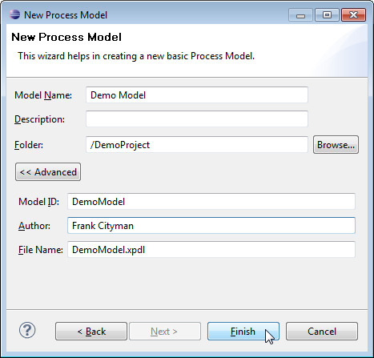
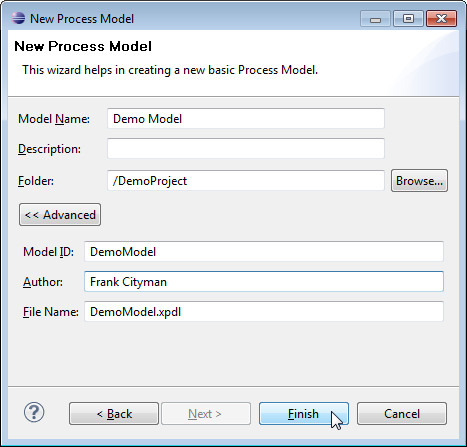

Figure: Creating a New Model

Figure: Enter New Model Name

Figure: Enter Advanced options
You can create new models by means of the following controls:
Figure: Creating a New Model
Figure: Enter New Model Name

Figure: Enter Advanced options
You can create a model by importing an existing one in a new model, as described in section Importing Models of the Importing, Exporting and Deploying Models chapter.
To delete an entire model right-click it in the Outline view and select Delete. To delete only a version of a model right-click the models version in the Process Model Repository view and select Delete.